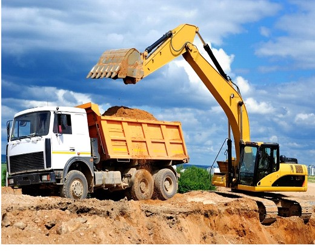
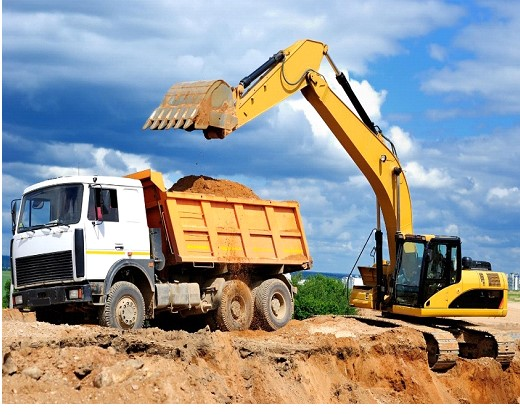

Projet de modernisation de de l'Expoitation de l'or
Etude Technique de l'exploitation de l'or
Description de Lieu de L'implatation
ETUDE TECHNIQUE DE L’EXPLOITATION MECANISEE DE L’OR A NYABITARE - RUKURURA
⦁ Description du lieu d’implantation.
Selon les résultats de recherche ci-haut présentés, dans 1 Tonne de matières brutes contient en moyenne 0,72 gramme d’or. Les sites choisis sont Butare, Jangwe , Mukongoro, Gisabe, Gitovu, Kibingo avec des sites intermédiaires ayant trait de filons. Tous ces sites vont approvisionner le CIP installé au point centre de traitement unique. Chaque site doit être doté d’engins d’exploitation divers comme les buldozzers, camions de 10 à 5 tonnes, générateurs de courant, pioches, marteaux piqueurs,
Projet d’exploitation semi mécanisée de l’or à NYABITARE RUKURURA. Les équipements nécessaires


Carbon in Pulp(CIP)
Le modele de production Carbon in Pulp est utilise pour l'extraction de l'or ,
cobinant l'adsorption et la desorption

Modèle d’engins d’appui au CIP
Les equipements utilises comprennent des camions
de transport d'une capacite de 10 tonnes pour un transport securise de l'or
 
